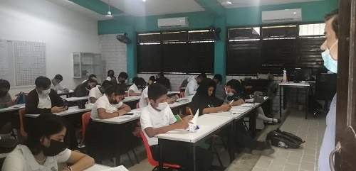

Informacion General
Bachilleres plantel cancun dos,es parte de una institucion publica medio superior que forma a sus estudiantes bajo el enfoque de las competencias , asu con el fin de preparar a sus estudiantes para la vida , asi como el mercado laboral, asi con los principios basicos de calidad, equidad, inclusion y principios, asi como el querer una buena redincion de cuentas. Para ello el colegio de Bachilleres plantel cancun Dos, como se sabe es esta comprometido a fomentar la transpariecia en el sector educativo, siendo una de las mejores escuelas en Quintana Roo asi como en Cancun gracias al nivel educativo que esta ofrece, asi como ser una de las mas solicitdas, siendo fundada en el mes de septiembre de 1992, dado el inicio del ciclo escolar 92-B, como primer ciclo escolar, a ello se le auna las diferentes ripos de generaciones que han estado parando hatas el 2023, siendo por ello su logotipo muy significativo el cual fue idea de el cual tiene el significado Por lo mismo es necesariotener en cuenta que esta institucion empezo en el año 1992 con algunos profesores asi teniendo mas de 31 años dando sus servicios a esta institucion , por lo que es de admirar cuanto tiempo ha pasado, junto a los cambios que han habido como en los inicios del el semestre 2022-B, el nuevo dierector junto al comite de padres de familia, y los paodres de los alumnos logragon poner los aires acondicionados empezando desde el salon 1 al 8 en principio, despues se estara ampliando hasta que rodos los salones cumplan esto.
Al igual de no olvidarse lo importante de las aulas en el colegio siendo muy bueno, asi se puede observar el como se maneja la clidad y ante todo la educacion de los proximos jaguares que empezaran su vida laboral en algunos años mas .